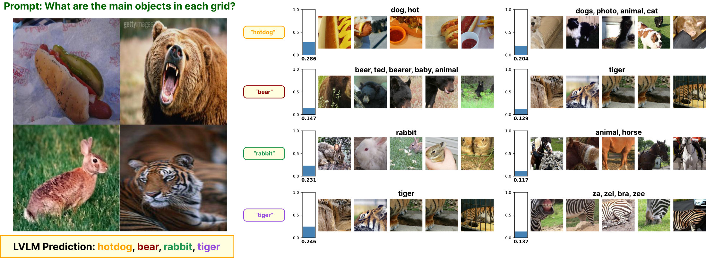
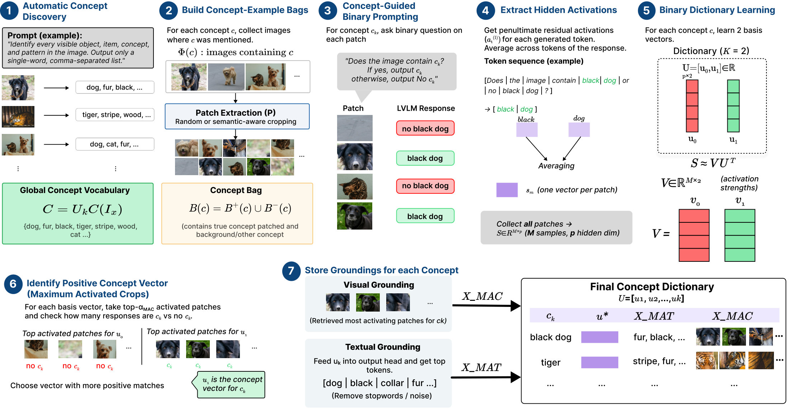
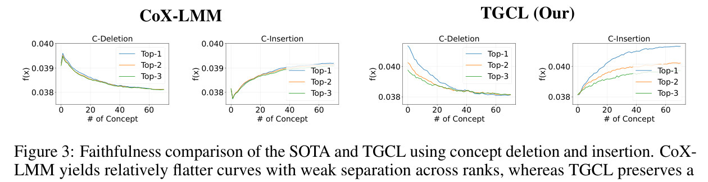
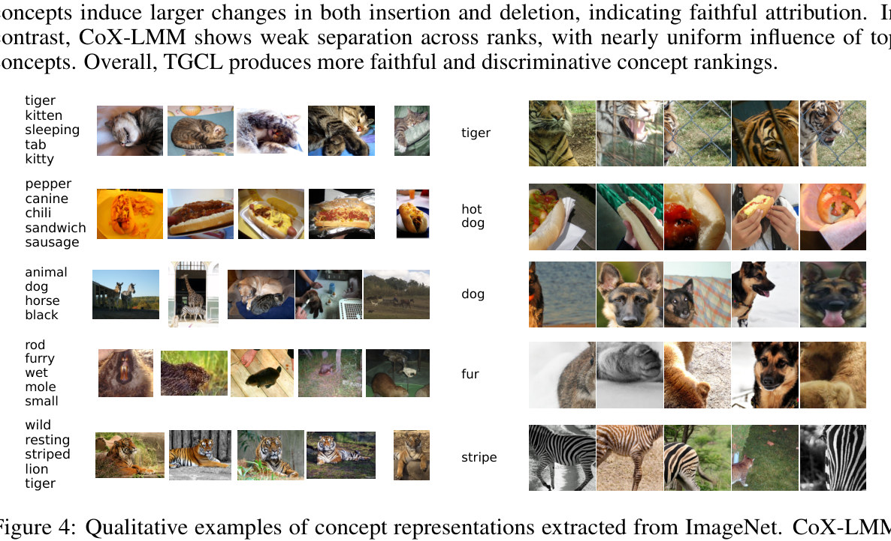
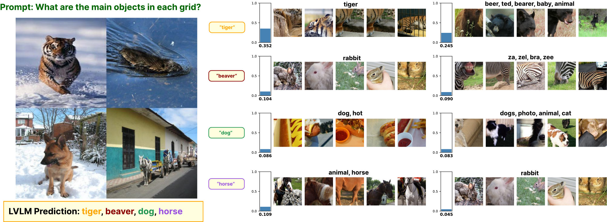
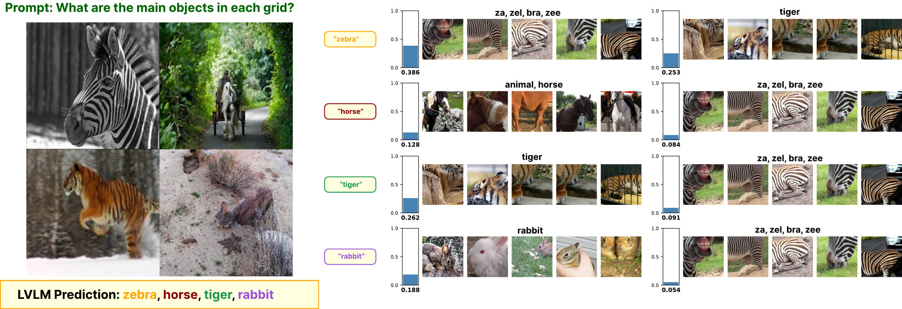
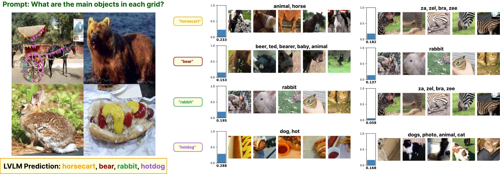

Large vision–language models (LVLMs) are inherently opaque, making it difficult to determine whether their outputs are grounded in visual evidence or driven by language-model priors. Existing concept-based interpretability methods are limited to classification settings, rely on proxy models, or require predefined tokens, and thus do not extend to LVLMs.
We propose Text-Guided Concept Learning (TGCL), a weakly supervised framework for extracting multimodal concept vectors in LVLMs without token supervision. TGCL builds concept-to-image mappings from data and extracts patch-level activations via concept-guided probing. It then formulates concept learning as a contrastive disentanglement problem, isolating concept-specific patches from background patches to produce sparse, stable, and semantically aligned concept vectors.
Across four datasets (ImageNet, MSCOCO, CIFAR-100, DTD) and three recent LVLMs, TGCL outperforms recent interpretability methods.
TGCL moves concept extraction from token-level representations to patch-level activations guided by textual concepts. Concept learning is a linear contrastive disentanglement problem: keeping the transformation linear keeps concept vectors in the model's own activation space, rather than explaining one black box with another.

The LVLM lists the concepts in each image. For each concept, crops (random or SAM proposals) from supporting images form a bag that mixes concept-present and concept-absent patches — no labels needed.
Each crop gets the binary prompt above. Residuals are averaged over the shared concept-token span only (dropping “No”), so the contrast comes from the image, not the token identity.
Per concept, the activations S are factorized as S ≈ VU⊤ with just two bases (concept vs. no-concept). K small independent dictionaries avoid atom interference and scale to large vocabularies.
The positive basis is picked via maximum-activated crops. Each vector is stored with visual (top patches) and textual (output-head tokens) groundings; predictions are attributed by cosine similarity to residual activations.
Gemma-3n-E4B. In the combined setting the model labels each cell of a 2×2 grid of unrelated images, and attribution is scored against those predictions.
| Method | Dataset | Metric | Random | Text-only | Image-only | Combined |
|---|---|---|---|---|---|---|
| TGCL (ours) | ImageNet | CLIPScore | 0.52 | – | 0.62 | 0.67 |
| BERTScore | 0.71 | 0.78 | 0.84 | 0.86 | ||
| MSCOCO | CLIPScore | 0.48 | – | 0.60 | 0.64 | |
| BERTScore | 0.71 | 0.89 | 0.91 | 0.93 | ||
| CoX-LMM | ImageNet | CLIPScore | 0.49 | – | 0.57 | 0.58 |
| BERTScore | 0.71 | 0.74 | 0.75 | 0.82 | ||
| MSCOCO | CLIPScore | 0.51 | – | 0.57 | 0.55 | |
| BERTScore | 0.71 | 0.83 | 0.79 | 0.73 |
Means shown; standard deviations, DTD, CIFAR-100, Qwen2-VL-7B and Qwen2.5-VL-7B are in the paper.


Each prediction on a 2×2 grid, with its two most attributed concepts: attribution score, top activating patches, and decoded tokens.



@article{tgcl2026,
title = {Weakly Supervised Concept Learning for Interpreting
and Attributing LVLM Predictions},
author = {Anonymous},
journal = {Under review},
year = {2026}
}